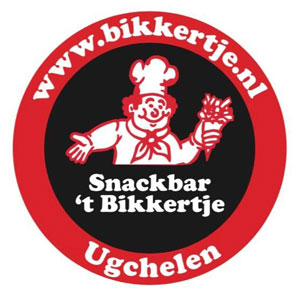
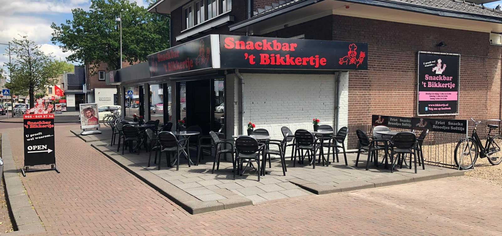
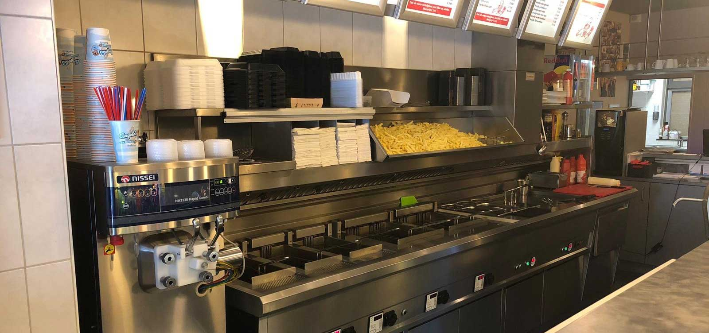
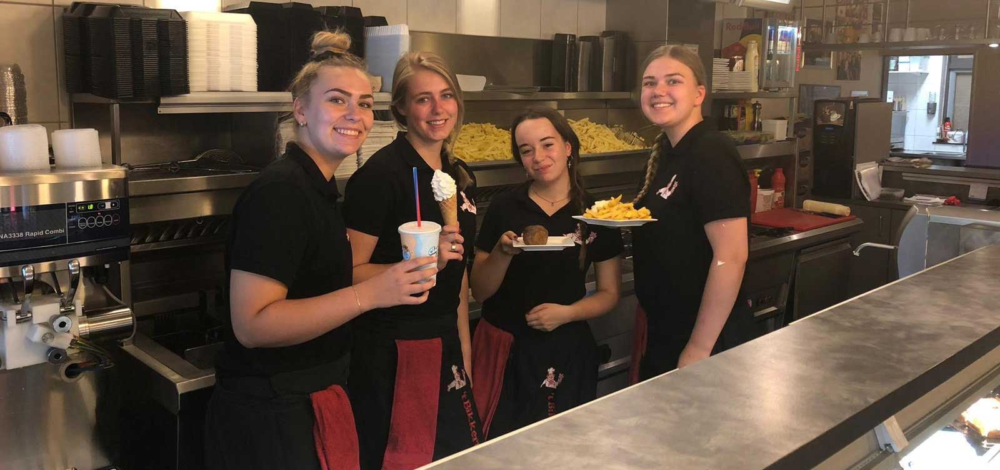
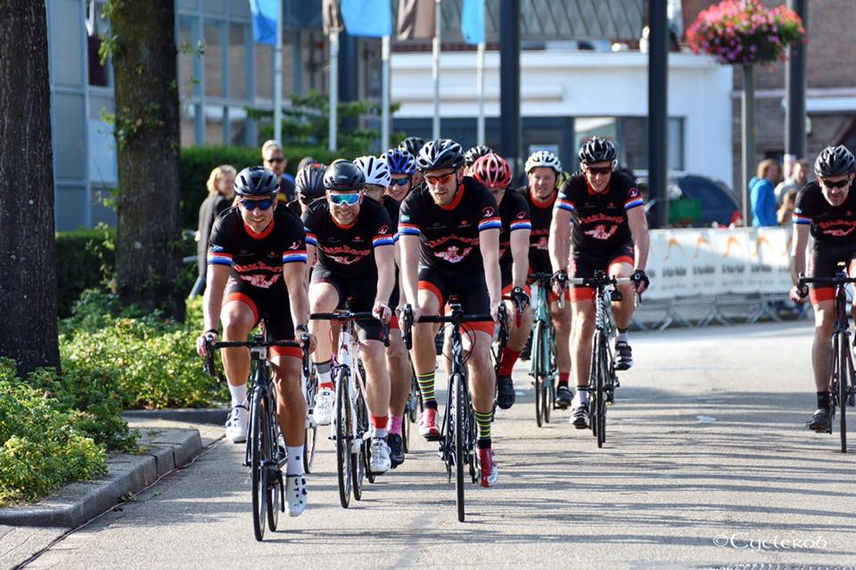

Wekelijkse acties
Onze wekelijkse acties vindt u op onze social media kanalen.

Snackbar in het centrum van Ugchelen, al 38 jaar
Een heerlijk patatje, een ruime keuze uit snacks, broodjes met warm en koud beleg, een borrel aan de bar en softijs op het zonnige terras.
Dinsdag t/m zaterdag 11:00 – 21:00, zondag 12:00 – 21:00

Snackbar 't Bikkertje is al 38 jaar gevestigd in het centrum van Ugchelen. Willem en Rosa de Bruijn zijn de oprichters van de snackbar aan de Ugchelseweg. Na het een aantal jaar verpacht te hebben, keerden Willem en Rosa in 2007 terug en werd 't Bikkertje van top tot teen verbouwd tot een gemoderniseerde en frisse snackbar.
Na een aantal succesvolle jaren werd hun grote liefde weer verpacht, nu aan hun dochter Patricia de Bruijn en schoonzoon Kevin Bonhof. Allebei werken ze al sinds de verbouwing in 2007 bij 't Bikkertje, en zijn daardoor een vertrouwd gezicht voor de klanten.
Veel klanten halen niet alleen even snel eten, maar blijven vaak een drankje doen aan de bar. In het weekend zit de bar vaak vol met mensen die een hapje komen eten en blijven hangen, om voetbal te kijken of gewoon voor de gezelligheid.

“Het leuke van de snackbar in Ugchelen is toch het ons kent ons, en daardoor is er altijd een gezellige sfeer.”
Kevin
“Wat wij belangrijk vinden is vooral de hygiëne, dat de klant goed geholpen wordt en dat onze producten goed in de smaak vallen.”
Patricia

Dat blijkt ook uit de parttimers: Julia Bouwmeester en Samantha Tognon stopten voor hun opleiding, maar kwamen allebei na een jaar alweer terug.
“Er moet gepresteerd worden, maar tegelijkertijd is de sfeer heel erg goed en gezellig.” Julia
Patricia en Kevin verwelkomen u graag in snackbar 't Bikkertje.
Snackbar 't Bikkertje zorgt ook voor catering op locatie. Heeft u een ander idee? Bel ons gerust.
Onze wekelijkse acties vindt u op onze social media kanalen.
In het RTL4-programma De Beste Van Nederland werd 't Bikkertje uitgeroepen tot De Beste Cafetaria van Gelderland. In de landelijke finale tegen de andere provinciewinnaars eindigden we als 4e. Dank aan al onze klanten voor de stemmen en de leuke reacties!

Mannen van Wielerclub 't Bikkertje bedankt voor de gezellige en sportieve dag! Op naar volgend jaar!
| Maandag | gesloten |
|---|---|
| Dinsdag | 11:00 – 21:00 |
| Woensdag | 11:00 – 21:00 |
| Donderdag | 11:00 – 21:00 |
| Vrijdag | 11:00 – 21:00 |
| Zaterdag | 11:00 – 21:00 |
| Zondag | 12:00 – 21:00 |